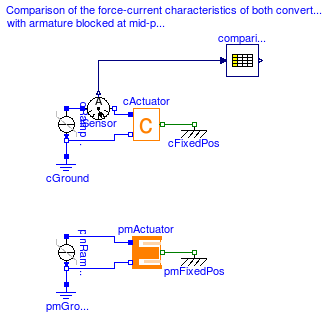
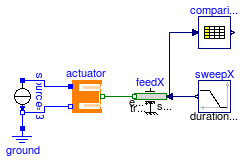
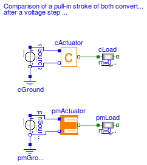

Moving coil actuators are often called electrodynamic actuators and a proportional behaviour between force and current is expressed by a converter constant (see ConstantActuator). However, in a simple moving coil actuator as presented in this example there is an additional non-linear force component that is due to the increase of the inductance when the armature coil moves into the ferromagnetic stator. A simple PermeanceActuator can be used to describe this non-linear force component.
| Name | Description |
|---|---|
| Comparison of the force-current characteristics of both converter models with armature blocked at mid-position | |
| Force-stroke characteristic of the permeance model at constant current | |
| Armature stroke of both moving coil actuator models after a voltage step at time t=0 | |
| Components to be used in examples |
 Modelica.Magnetic.FluxTubes.Examples.MovingCoilActuator.ForceCurrentBehaviour
Modelica.Magnetic.FluxTubes.Examples.MovingCoilActuator.ForceCurrentBehaviour
Have a look at ConstantActuator and at PermeanceActuator for an explanation of both converter models.
Simulation of the force-current characteristics of both converter models with the armature blocked at mid-position x=0 reveals the difference between the two models. In the ConstantActuator, force is proportional to current. In the simple PermeanceActuator there is an additional non-linear force component that is due to the dependency of the inductance on the armature position. Comparison with FEA results validates the higher accuracy of the PermeanceActuator. In the FEA model, the relative permeability of the stator iron was set to mu_rFe=const.=1000 in order to avoid additional non-linear force components due to saturation. Simulate for 6 s and plot vs. current (e.g. iSensor.i)
pmFixedPos.flange_b.f // force of permeance model
cFixedPos.flange_b.f // force of converter constant model
comparisonWithFEA.y[1] // force of FEA model for comparison
Extends from Modelica.Icons.Example (Icon for an example model).
model ForceCurrentBehaviour
"Comparison of the force-current characteristics of both converter models with armature blocked at mid-position"
extends Modelica.Icons.Example;
Modelica.Electrical.Analog.Basic.Ground pmGround;
Modelica.Magnetic.FluxTubes.Examples.MovingCoilActuator.Components.PermeanceActuator
pmActuator(x(start=0), material=
Modelica.Magnetic.FluxTubes.Material.HardMagnetic.PlasticNdFeB())
"Moving coil actuator described with permeance model";
Modelica.Mechanics.Translational.Components.Fixed pmFixedPos(
s0=0)
"Fixed armature position";
Modelica.Electrical.Analog.Sources.RampCurrent pmRampCurrent(
I=-6,
duration=6,
offset=3) "Ideal current source ";
Modelica.Electrical.Analog.Basic.Ground cGround;
Modelica.Mechanics.Translational.Components.Fixed cFixedPos(
s0=0)
"Fixed armature position";
Modelica.Electrical.Analog.Sources.RampCurrent cRampCurrent(
I=-6,
duration=6,
offset=3) "Ideal current source ";
Modelica.Magnetic.FluxTubes.Examples.MovingCoilActuator.Components.ConstantActuator
cActuator "Moving coil actuator described with converter constant";
Modelica.Blocks.Tables.CombiTable1Ds comparisonWithFEA(table=[-3,-9.65653;
-2.5,-8.28587; -2,-6.82002; -1.5,-5.25898; -1,-3.60274; -0.5,-1.85131;
0,-0.00468; 0.5,1.93714; 1,3.97415; 1.5,6.10636; 2,8.33376; 2.5,
10.65636; 3,13.07415])
"Column 1: current, col. 2: force; mu_rFe=const.=1000 in FEA model";
Modelica.Electrical.Analog.Sensors.CurrentSensor iSensor
"Input value for look-up table with FEA results";
equation
connect(pmFixedPos.flange, pmActuator.flange);
connect(pmRampCurrent.p, pmActuator.p);
connect(pmActuator.n, pmRampCurrent.n);
connect(pmGround.p, pmRampCurrent.n);
connect(cGround.p,cRampCurrent. n);
connect(cActuator.flange,cFixedPos.flange);
connect(cRampCurrent.n, cActuator.n);
connect(cRampCurrent.p, iSensor.p);
connect(cActuator.p, iSensor.n);
connect(iSensor.i, comparisonWithFEA.u);
end ForceCurrentBehaviour;
Modelica.Magnetic.FluxTubes.Examples.MovingCoilActuator.ForceStrokeBehaviour
Have a look at ConstantActuator and at PermeanceActuator for an explanation of both converter models.
Simulation of the force-stroke characteristic of the PermeanceActuator with a constant current I=3A and a forced armature movement (similar to measurements in reality) shows the dependency of both force-generating permeances G_ma and G_mb as well as inductance L on armature position x. Simulate for 8 s and plot vs. armature position feedX.flange_b.s (same physical quantities together in a common diagram for comparison):
feedX.flange_b.f // force of permeance model (permeance of stator iron neglegted in this model)
comparisonWithFEA.y[1] // force of FEA model with non-linear stator iron 1.0718
comparisonWithFEA.y[2] // force of FEA model with mu_rFe=const.=1000
actuator.g_ma.G_m // permeance G_ma
actuator.g_mb.G_m // permeance G_mb
actuator.L // inductance of permeance model
comparisonWithFEA.y[3] // inductance of FEA model for comparison (mu_rFe=const.=1000).
Extends from Modelica.Icons.Example (Icon for an example model).
model ForceStrokeBehaviour
"Force-stroke characteristic of the permeance model at constant current"
extends Modelica.Icons.Example;
Modelica.Electrical.Analog.Basic.Ground ground;
Modelica.Magnetic.FluxTubes.Examples.MovingCoilActuator.Components.PermeanceActuator
actuator(x(start=0), material=
Modelica.Magnetic.FluxTubes.Material.HardMagnetic.PlasticNdFeB());
Modelica.Electrical.Analog.Sources.ConstantCurrent source(I=3);
Modelica.Blocks.Sources.Ramp sweepX(
height=7.99e-3,
duration=8,
offset=-3.995e-3,
startTime=-4);
Modelica.Mechanics.Translational.Sources.Position feedX(
exact=true);
Modelica.Blocks.Tables.CombiTable1Ds comparisonWithFEA(table=[-0.004,-8.8729,
-9.07503,0.00332; -0.0035,-9.05239,-9.25042,0.00352; -0.003,-9.1915,-9.38558,
0.00371; -0.0025,-9.28247,-9.47266,0.0039; -0.002,-9.3587,-9.54503,
0.00409; -0.0015,-9.41568,-9.59782,0.00429; -0.001,-9.45496,-9.6331,
0.00448; -0.0005,-9.47427,-9.64839,0.00467; 0,-9.48639,-9.65616,0.00486;
0.0005,-9.48623,-9.65174,0.00505; 0.001,-9.4732,-9.63435,0.00524;
0.0015,-9.44143,-9.59825,0.00543; 0.002,-9.39915,-9.55226,0.00562;
0.0025,-9.33166,-9.47988,0.00581; 0.003,-9.23707,-9.38112,0.006; 0.0035,
-9.09497,-9.23417,0.00619; 0.004,-8.91839,-9.05337,0.00638])
"Column 1: position, col.2: force with non-linear stator iron, col.3: force with mu_rFe=const.=1000, col.4: inductance with mu_rFe=const.=1000 ";
equation
connect(ground.p, source.n);
connect(source.n, actuator.n);
connect(source.p, actuator.p);
connect(sweepX.y, feedX.s_ref);
connect(feedX.flange, actuator.flange);
connect(feedX.s_ref, comparisonWithFEA.u);
end ForceStrokeBehaviour;
Modelica.Magnetic.FluxTubes.Examples.MovingCoilActuator.ArmatureStroke
Have a look at ConstantActuator and at PermeanceActuator for an explanation of both actuator models.
A voltage step at time t=0 is applied to both actuator models. In each model, the armature and an attached load mass perform a stroke between the two stoppers included in cActuator.armature and pmActuator.armature respectively. Simulate for 0.05 s and plot vs. time (same physical quantities together in a common diagram for comparison):
cActuator.p.i // input current to converter constant model
pmActuator.p.i // input current to permeance model
cActuator.armature.flange_a.f // actuator force of converter constant model
pmActuator.armature.flange_a.f // actuator force of permeance model
cActuator.x // armature position of converter constant model
pmActuator.x // armature position of permeance model
cActuator.L // inductance of converter constant model
pmActuator.L // inductance of permeance model
The initial current rise in both actuator models is due to the inductance of the actuator coil. After acceleration of the armature and the load, the current decreases due to the motion-induced back-emf. Bouncing occurs when the armatures of both models arrive at the stopper at maximum armature position. The bouncing is rather intense due to the absence of any kind of external friction in this simple example (apart from the nonlinear damping in the stopper elements). After decay of the bouncing, both actuators operate under conditions valid for a blocked armature.
Whereas the steady state current is the same in both models, the steady state actuator force is not due to the neglection of the non-linear force component in the converter constant model. Differences in the current rise of both models are due to the neglection of the coil inductance variation in the converter constant model.
Extends from Modelica.Icons.Example (Icon for an example model).
model ArmatureStroke
"Armature stroke of both moving coil actuator models after a voltage step at time t=0"
extends Modelica.Icons.Example;
Modelica.Electrical.Analog.Basic.Ground pmGround;
Modelica.Electrical.Analog.Sources.StepVoltage pmSource(
startTime=0,
V=pmActuator.R*1.5) "Steady state current 1.5A";
Modelica.Magnetic.FluxTubes.Examples.MovingCoilActuator.Components.PermeanceActuator
pmActuator(material=Modelica.Magnetic.FluxTubes.Material.HardMagnetic.PlasticNdFeB(), x(
start=pmActuator.x_min, fixed=true),
armature(v(fixed=true)),
coil(i(fixed=true))) "Moving coil actuator described with permeance model";
Modelica.Mechanics.Translational.Components.Mass pmLoad(
m=0.05)
"Load to be moved in addition to the armature mass";
Modelica.Electrical.Analog.Basic.Ground cGround;
Modelica.Electrical.Analog.Sources.StepVoltage cSource(
startTime=0,
V=cActuator.R*1.5) "Steady state current 1.5A";
Modelica.Magnetic.FluxTubes.Examples.MovingCoilActuator.Components.ConstantActuator
cActuator(x(start=cActuator.x_min, fixed=true), armature(v(
fixed=true)),
l(i(start=0, fixed=true)))
"Moving coil actuator described with converter constant";
Modelica.Mechanics.Translational.Components.Mass cLoad(
m=0.05)
"Load to be moved in addition to the armature mass";
equation
connect(pmLoad.flange_a, pmActuator.flange);
connect(cGround.p, cSource.n);
connect(cLoad.flange_a, cActuator.flange);
connect(cSource.p, cActuator.p);
connect(cSource.n, cActuator.n);
connect(pmSource.n, pmGround.p);
connect(pmSource.n, pmActuator.n);
connect(pmSource.p, pmActuator.p);
end ArmatureStroke;